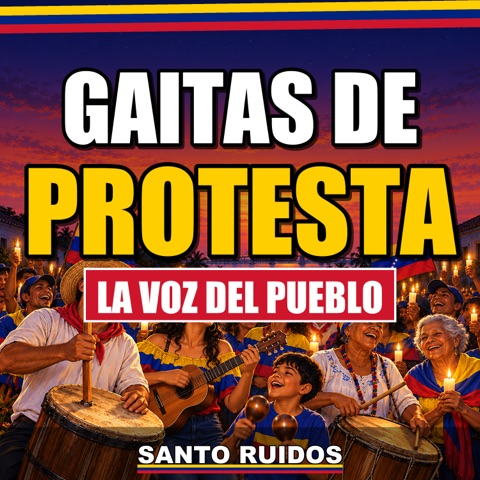

Radio Gaita 24/7: gaitas venezolanas online sin parar
¿Buscas gaitas online las 24 horas? La Radio Gaita de Santo Ruidos transmite en vivo en YouTube, de día y de noche, todas nuestras gaitas zulianas, una tras otra y con la letra en pantalla.
Déjala sonando en la casa, en el carro o en el trabajo. Mientras la escuchas puedes escribir en el chat desde cualquier país: allí se encuentra la diáspora venezolana.
Abrir la Radio Gaita 24/7 en YouTube
Radio gaitas 24/7: 22 gaitas con letra y video
 Se Llevaron a Nicolás (Y Se Fue la Luz)Letra y video · La Voz del Pueblo · 3:59
Se Llevaron a Nicolás (Y Se Fue la Luz)Letra y video · La Voz del Pueblo · 3:59- Nos Dejaron la HojaLetra y video · La Voz del Pueblo · 3:59
- Bolichico PremiadoLetra y video · La Voz del Pueblo · 4:29
 Llegó Sin un KioscoLetra y video · La Voz del Pueblo · 3:59
Llegó Sin un KioscoLetra y video · La Voz del Pueblo · 3:59- Lo Que Sirve Es el EnchufeLetra y video · La Voz del Pueblo · 3:59
 Revolución BonitaLetra y video · La Voz del Pueblo · 4:01
Revolución BonitaLetra y video · La Voz del Pueblo · 4:01- Puro LetreroLetra y video · La Voz del Pueblo · 3:50
- Su Cara con Mi PlataLetra y video · La Voz del Pueblo · 3:59

Se Fue Nicolás (Y la Luz También)Letra y video · La Voz del Pueblo · 3:28- El del MazoLetra y video · La Voz del Pueblo · 4:00
- Echando BromaLetra y video · La Voz del Pueblo · 3:59
 La Ruleta de la LuzLetra y video · La Voz del Pueblo · 4:00
La Ruleta de la LuzLetra y video · La Voz del Pueblo · 4:00- El Aguinaldo de 15 CentavosLetra y video · La Voz del Pueblo · 3:59
- El Reloj de DelcyLetra y video · La Voz del Pueblo · 3:59
 Muy VerdeLetra y video · La Voz del Pueblo · 3:59
Muy VerdeLetra y video · La Voz del Pueblo · 3:59- La Cacerola es mi FurroLetra y video · La Voz del Pueblo · 3:59
- 22 TrimestresLetra y video · La Voz del Pueblo · 3:59
 La Puerta GiratoriaLetra y video · La Voz del Pueblo · 3:59
La Puerta GiratoriaLetra y video · La Voz del Pueblo · 3:59- Sentado en el PetróleoLetra y video · La Voz del Pueblo · 3:59
 La Foto de DelcyLetra y video · La Voz del Pueblo · 3:59
La Foto de DelcyLetra y video · La Voz del Pueblo · 3:59 La misma oscuridadLetra y video · La Voz del Pueblo · 4:00
La misma oscuridadLetra y video · La Voz del Pueblo · 4:00- La Maleta al RevésLetra y video · La Voz del Pueblo · 3:59